import sys, pathlib
sys.path.insert(0, str(pathlib.Path("_includes").resolve()))
from setup import configure_warnings, ensure_matplotlib_initialized
ensure_matplotlib_initialized()
configure_warnings()
import numpy as np
import pandas as pd
import ggnomics as gg
from plotnine import theme_bw, theme, labs, element_textSpecialized plots
Abundance, statistics, palettes, heatmaps, and immune repertoire
These examples collect plot families that complement the full analysis workflows: donor-aware abundance and pseudobulk summaries from human pancreas, significance annotations in mouse brain data, differential- expression visualizations from the rice experiment, and immune-repertoire plots from ECCITE-seq TCR data. The page also covers palettes and Marsilea heatmaps.
Baron pancreas: abundance, composition, and pseudobulk
from data import load_baron
baron = load_baron()
baron.shape(20125, 8569)Abundance by donor and cell type
baron_cd = baron.get_column_data().to_pandas()
gg.plot_abundance(baron_cd, group_by="donor", color_by="label") + theme_bw() + labs(title="Pancreatic cell-type composition per donor (fraction)", x="Donor", y="Fraction of cells")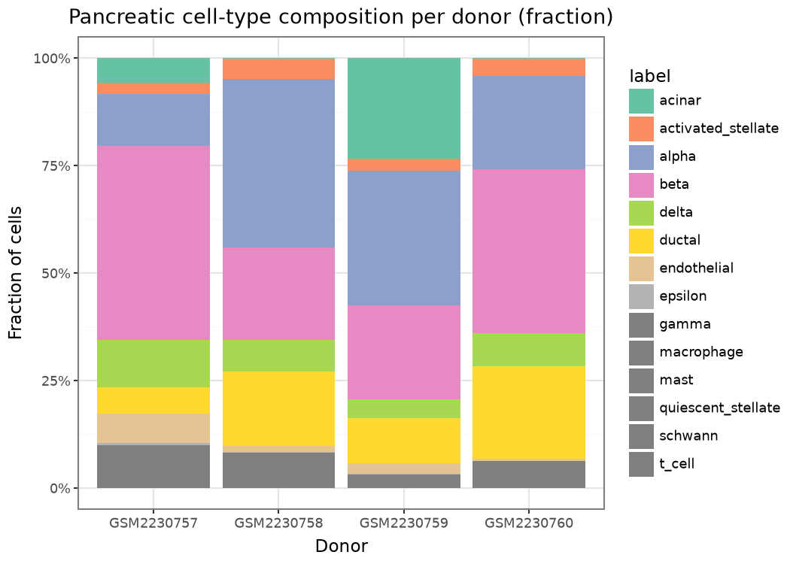
Counts vs. proportions
gg.plot_abundance(baron_cd, group_by="donor", color_by="label", normalize=False) + theme_bw() + labs(title="Same composition, raw cell counts", x="Donor", y="Number of cells")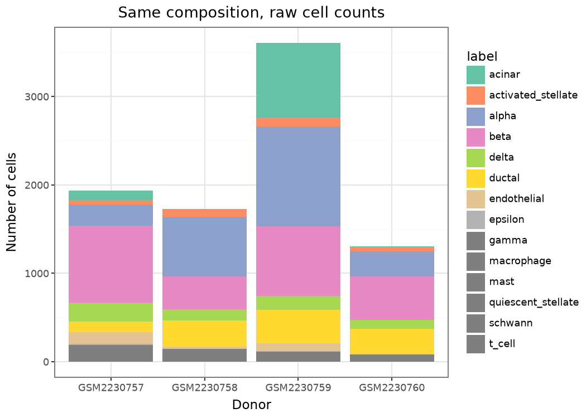
Donor-aware grouping and pseudobulk QC
Individual cells are not biological replicates. For sample-aware summaries, the donor identifies the replicate and label identifies the cell type. plot_pseudobulk_qc displays cell counts for each donor/group combination, library sizes, and a pseudobulk PCA across the four donors:
gg.plot_pseudobulk_qc(baron, sample_by="donor", group_by="label", min_cells=10)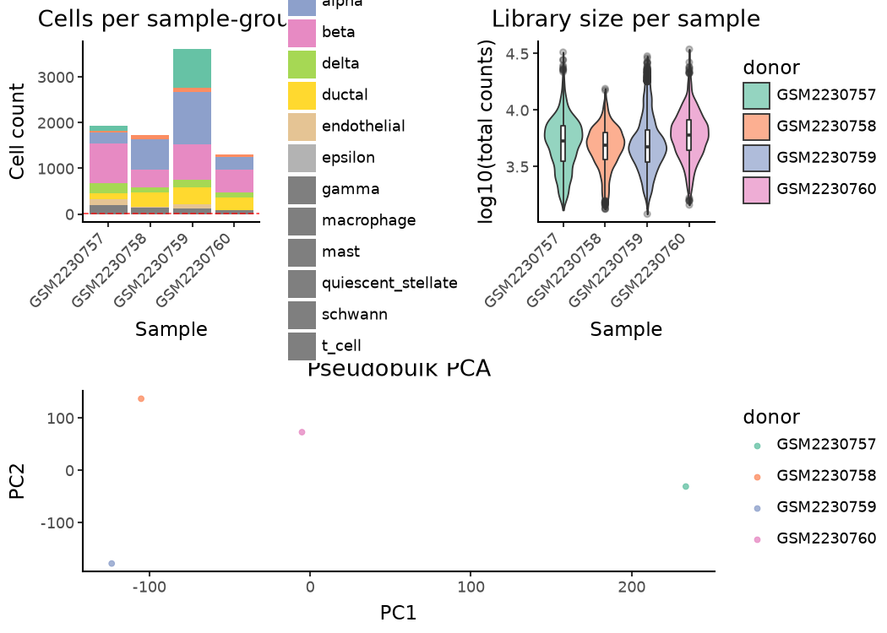
Grouped, clustered heatmap
markers = ["INS", "GCG", "SST", "PPY", "KRT19", "CPA1", "PDGFRB", "PECAM1"]
row_names = baron.get_row_names()
available = [m for m in markers if m in row_names]
gg.plot_heatmap(baron, features=available, group_by="label", layer="counts", cluster_rows=True, cluster_cols=True) + theme(axis_text_x=element_text(rotation=45, hjust=1))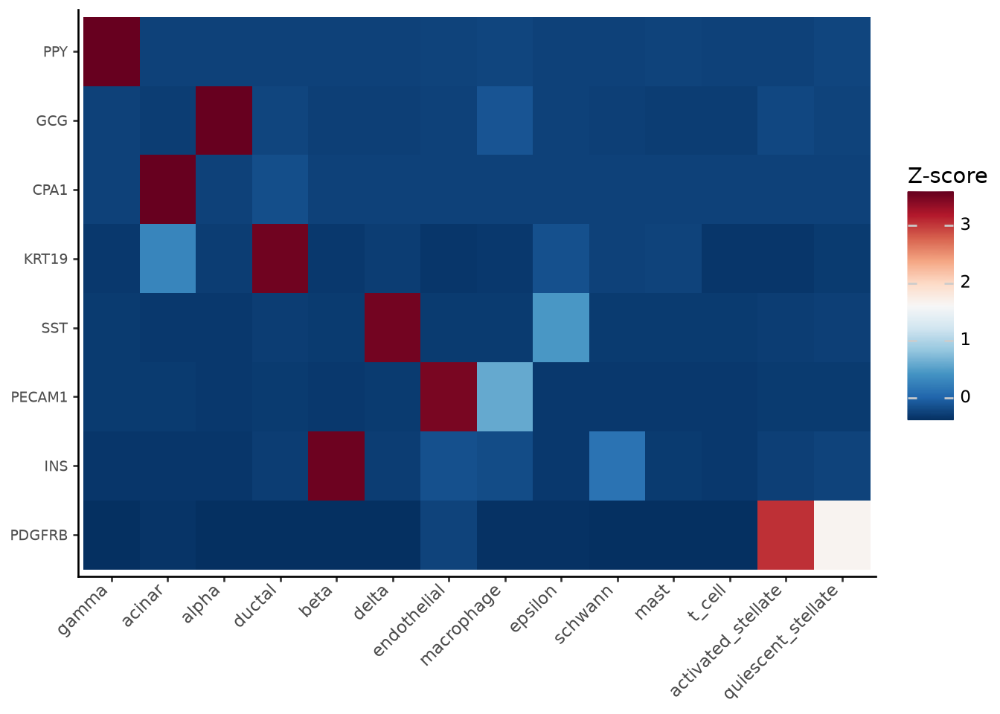
Zeisel: statistics, significance brackets, dot plots, palettes
We use the processed Zeisel object from the scranpy workflow:
from data import run_scranpy_pipeline_on_zeisel
final = run_scranpy_pipeline_on_zeisel()Grouped statistics with automatic significance brackets
plot_violin_stats and plot_box_stats can run pairwise tests and add ggsignif-style brackets. The examples below use the default Mann–Whitney test across cells. These p-values describe the profiled cells and should not be interpreted as inference across independent animals; a biological-replicate analysis would require sample-level observations.
cd = final.column_data.to_pandas()
gfap_idx = list(final.get_row_names()).index("Gfap")
cd["Gfap"] = np.asarray(final.get_assay("logcounts")[gfap_idx, :]).ravel()
two_classes = cd[cd["level1class"].isin(["astrocytes_ependymal", "oligodendrocytes"])]
gg.plot_violin_stats(
two_classes, "Gfap", group_by="level1class",
comparisons=[("astrocytes_ependymal", "oligodendrocytes")],
annotation="stars",
) + theme_bw() + labs(title="Gfap: astrocytes vs. oligodendrocytes (per-cell Mann-Whitney)", y="logcounts")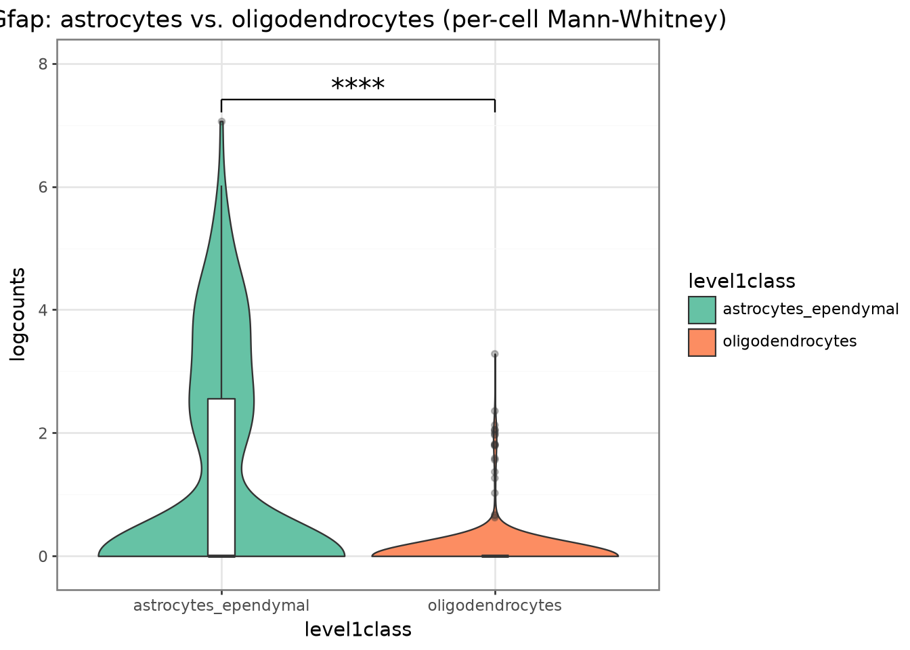
gg.plot_box_stats(
cd, "Gfap", group_by="level1class",
comparisons=[("astrocytes_ependymal", c) for c in ["oligodendrocytes", "microglia", "endothelial-mural"]],
annotation="pvalue", sig_only=False,
) + theme_bw() + theme(axis_text_x=element_text(rotation=30, hjust=1)) + labs(title="Gfap across classes, raw p-values shown")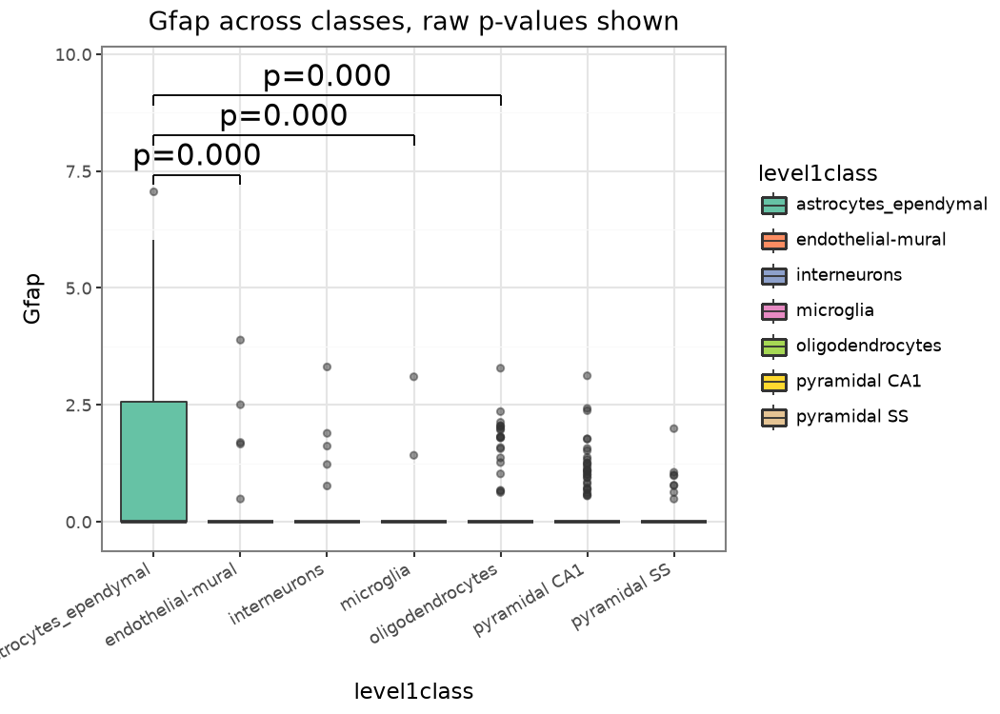
A minimal geometry example for geom_signif
The next example focuses on bracket placement—stacking, tip length, and star mapping—using three Zeisel cell classes. It illustrates the geometry rather than making a biological comparison.
In automatic mode, geom_signif(comparisons=...) returns a deferred _DeferredSignif object. Calling .resolve(df, x_col, y_col) supplies the data needed for the tests and returns plotnine layers that can be added to the plot.
from ggnomics import geom_signif
from plotnine import ggplot, aes, geom_boxplot
geom_df = cd[cd["level1class"].isin(["microglia", "endothelial-mural", "astrocytes_ependymal"])][["level1class", "Gfap"]]
bracket_layers = geom_signif(
comparisons=[("microglia", "endothelial-mural"), ("microglia", "astrocytes_ependymal")]
).resolve(geom_df, "level1class", "Gfap")
(
ggplot(geom_df, aes(x="level1class", y="Gfap"))
+ geom_boxplot()
+ bracket_layers
+ theme_bw()
+ labs(title="geom_signif bracket-stacking geometry check")
)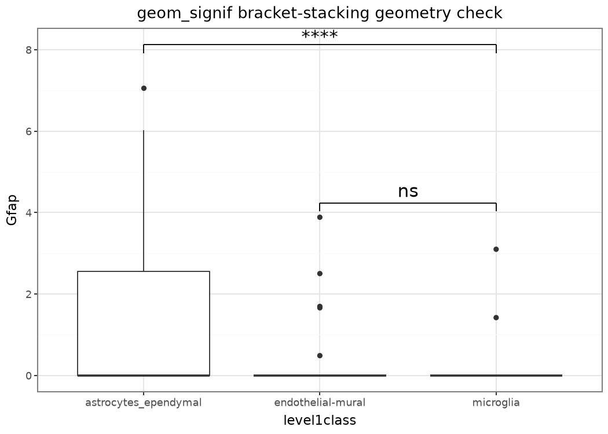
Dot plot
markers = ["Gfap", "Mog", "Gad2", "Snap25", "Aif1", "Cldn5", "Pdgfrb"]
gg.plot_dot(final, features=markers, group_by="level1class", layer="logcounts") + theme_bw() + theme(axis_text_x=element_text(rotation=45, hjust=1))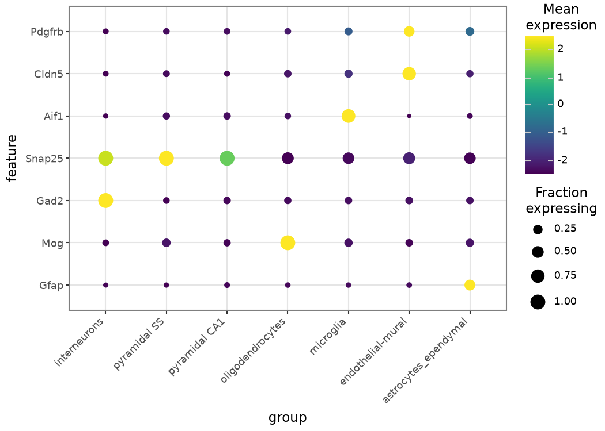
Selected scatter plot
cd["n_genes"] = cd["detected"]
gg.plot_coldata(cd, x="sum", y="n_genes", color_by="level1class") + theme_bw() + labs(title="Library size vs. genes detected, colored by cell class", x="Total counts")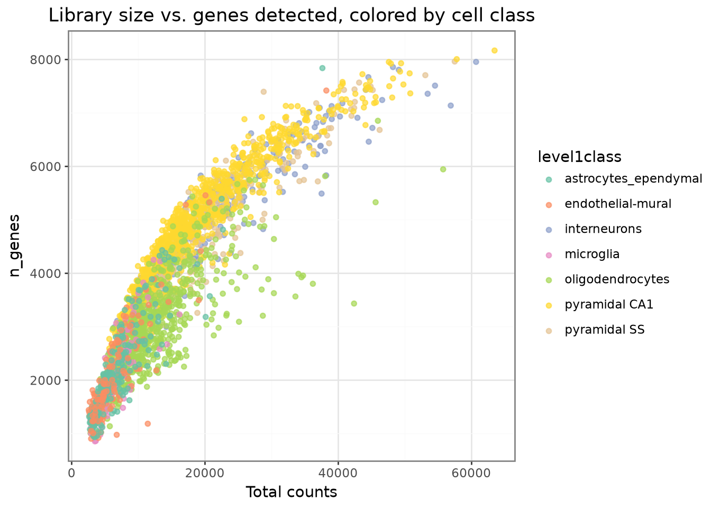
Custom palettes and the IGV palette
custom = {"astrocytes_ependymal": "#1B9E77", "oligodendrocytes": "#D95F02", "microglia": "#7570B3"}
gg.plot_umap(final, color="level1class", palette=custom) + theme_bw() + labs(title="Custom 3-color override; remaining classes fall back to the default palette")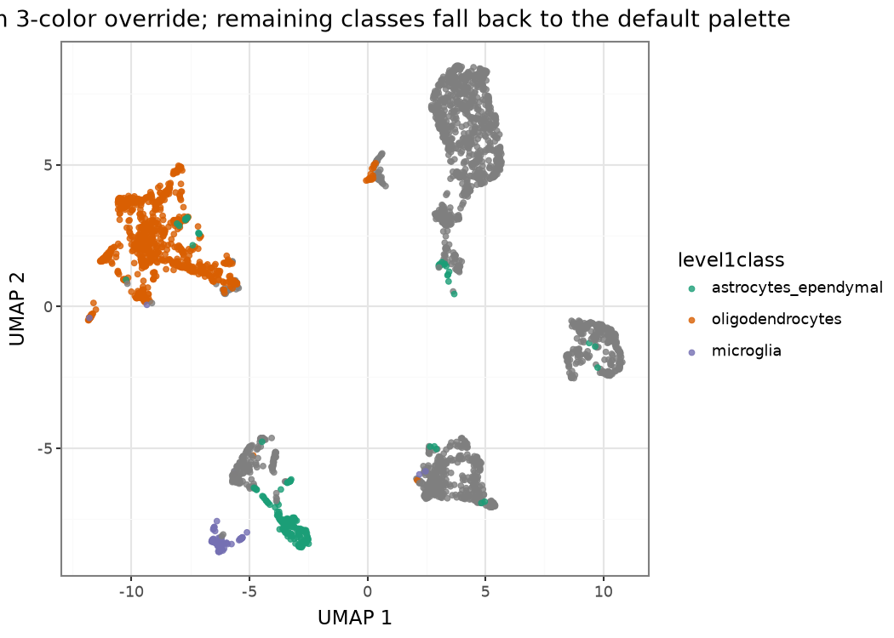
The IGV palette follows the chromosome-colour convention from the Integrative Genomics Viewer, using values published by the R package ggsci in ggsci::pal_igv(). See Robinson et al., Nature Biotechnology 29, 24–26 (2011).
igv_preview = pd.DataFrame({"chrom": list(gg.IGV_DEFAULT.keys())[:12], "value": 1})
gg.plot_coldata(igv_preview, x="chrom", y="value", color_by="chrom", shape="bar", palette=gg.IGV_DEFAULT) + theme_bw() + theme(legend_position="none", axis_text_x=element_text(rotation=45, hjust=1)) + labs(title="IGV chromosome-color palette (first 12 entries)", y="")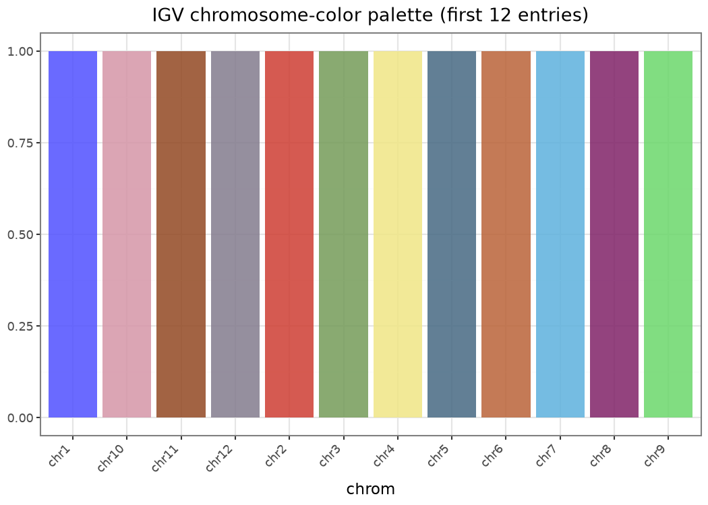
E-MTAB-1625: differential-expression results
The following plots use the PyDESeq2 fit introduced in the bulk RNA-seq workflow:
from data import run_deseq2_on_emtab1625
fit = run_deseq2_on_emtab1625()
results, vst, gene_names = fit["results"], fit["vst"], fit["gene_names"]Sample metadata plot
lib_sizes = fit["counts"].sum(axis=1).rename("library_size").reset_index().rename(columns={"index": "sample"})
lib_sizes["growth_condition"] = fit["metadata"]["growth_condition"].to_numpy()
gg.plot_coldata(lib_sizes, x="growth_condition", y="library_size", shape="point") + theme_bw() + labs(title="Library size, 24h salt vs. control", y="Total raw counts")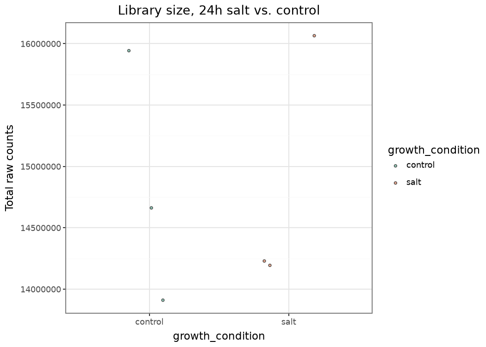
Volcano, MA, and coefficient plots — alternate styling
gg.plot_volcano(results, label_top_n=15, logfc_threshold=1.5) + theme_bw() + labs(title="Stricter |log2FC| > 1.5 threshold")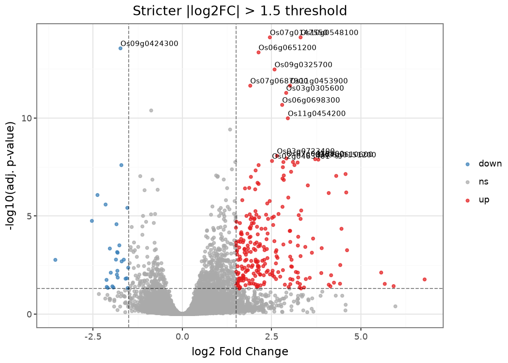
gg.plot_ma(results, label_top_n=6, logfc_threshold=1.0) + theme_bw()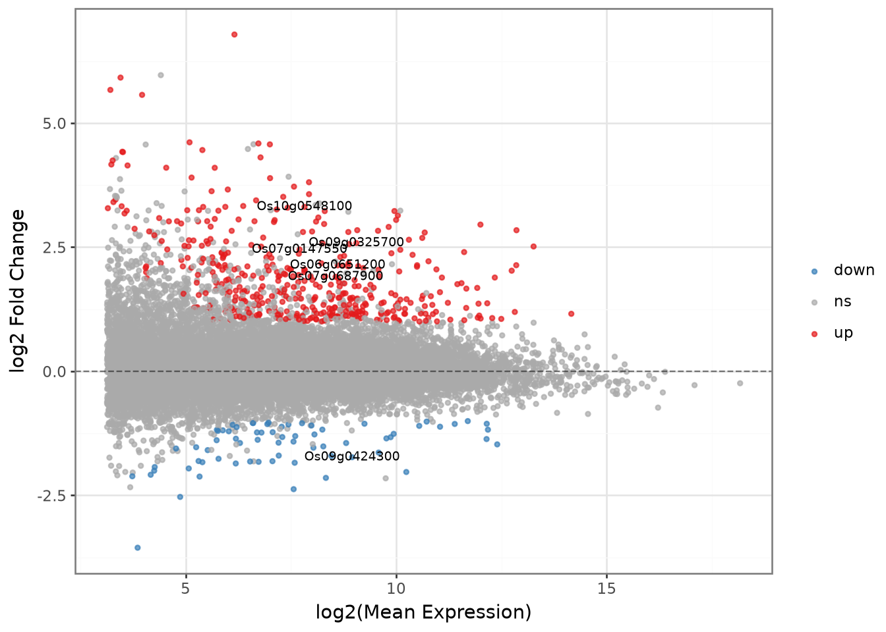
Marsilea-backed heatmap
The transformed expression matrix can also be passed directly to Marsilea for a composable heatmap with dendrograms. Marsilea is used alongside ggnomics here rather than wrapped by it.
import marsilea as ma
sig_top = results.loc[results["padj"] < 0.05].sort_values("padj").head(25)
mat = vst[sig_top.index]
z = (mat - mat.mean()) / mat.std()
z.columns = [gene_names.get(g) or g for g in z.columns]
h = ma.Heatmap(z.T.to_numpy(), cmap="RdBu_r", label="z-score")
h.add_dendrogram("right")
h.add_dendrogram("top")
h.add_left(ma.plotter.Labels(z.T.index.tolist()), pad=0.1)
h.add_top(ma.plotter.Labels(z.T.columns.tolist()), pad=0.1)
h.render()
h.save(str(pathlib.Path("_freeze_assets") / "marsilea_emtab1625.png"))<marsilea.heatmap.Heatmap at 0x7daa78ce0800>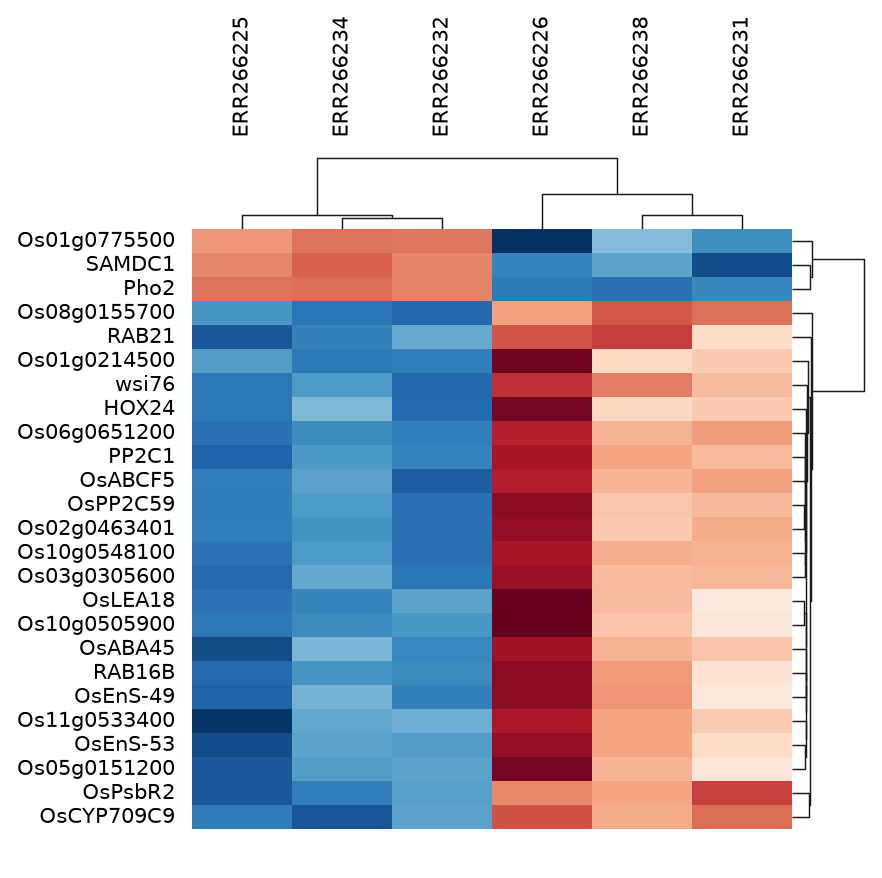
ECCITE-seq TCR repertoire (EH4616 CTCL, EH4621 control)
from data import load_tcr_repertoire
tcr = load_tcr_repertoire()
tcr["chain"].value_counts()Package 'multiassayexperiment' is not installed.chain
TRB 8581
TRA 6243
Multi 2159
IGL 399
IGH 302
IGK 185
TRG 56
TRD 44
None 16
Name: count, dtype: int64trb = tcr[(tcr["chain"] == "TRB") & (tcr["raw_clonotype_id"] != "None")].dropna(subset=["v_gene", "j_gene"])
cell_level = trb.drop_duplicates(subset=["barcode", "condition"])
cell_level.shape(6601, 20)Clonotype abundance
gg.plot_clonotype_abundance(cell_level, clonotype_col="clonotype_id", sample_col="condition", top_n=15) + theme_bw() + theme(axis_text_x=element_text(rotation=45, hjust=1))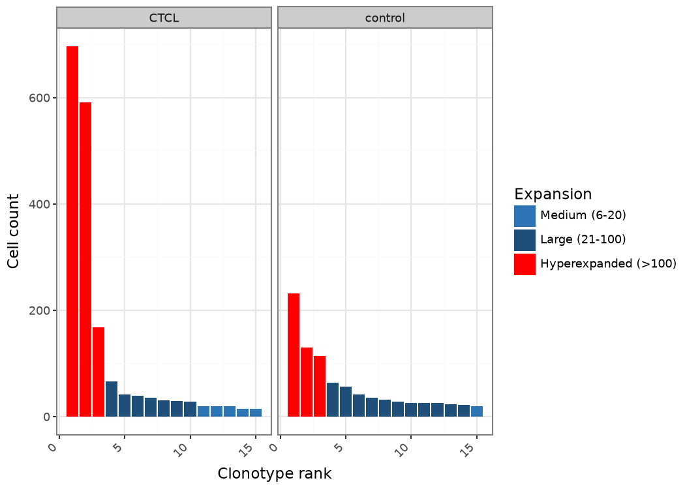
Clonotype overlap
The loading helper prefixes clonotype_id by condition because native 10x clonotype labels are only unique within a run. Cross-condition overlap is therefore calculated from CDR3 amino-acid sequences instead:
productive_trb = tcr[(tcr["chain"] == "TRB") & (tcr["productive"] == "True") & tcr["cdr3"].notna()]
ctcl_cdr3 = set(productive_trb.loc[productive_trb["condition"] == "CTCL", "cdr3"])
control_cdr3 = set(productive_trb.loc[productive_trb["condition"] == "control", "cdr3"])
f"{len(ctcl_cdr3)} unique productive TRB CDR3s (CTCL), {len(control_cdr3)} (control), {len(ctcl_cdr3 & control_cdr3)} shared"'1568 unique productive TRB CDR3s (CTCL), 1394 (control), 0 shared'No exact CDR3 sequence is shared between the CTCL and control samples in these resources. Exact overlap between unrelated individuals is expected to be sparse because of the diversity of the TCR repertoire. The Jaccard matrix summarizes the comparison:
cdr3_level = productive_trb.drop_duplicates(subset=["cdr3", "condition"])[["cdr3", "condition"]]
result = gg.plot_clonotype_overlap(cdr3_level, clonotype_col="cdr3", sample_col="condition", method="jaccard")
result.matrix| CTCL | control | |
|---|---|---|
| CTCL | 1.0 | 0.0 |
| control | 0.0 | 1.0 |
V/J gene usage
v_usage = cell_level.groupby(["condition", "v_gene"]).size().reset_index(name="n_cells")
top_v = v_usage.groupby("v_gene")["n_cells"].sum().nlargest(15).index
gg.plot_coldata(
v_usage[v_usage["v_gene"].isin(top_v)], x="v_gene", y="n_cells", color_by="condition", shape="bar",
) + theme_bw() + theme(axis_text_x=element_text(rotation=45, hjust=1)) + labs(title="TRB V-gene usage (top 15 by cell count)")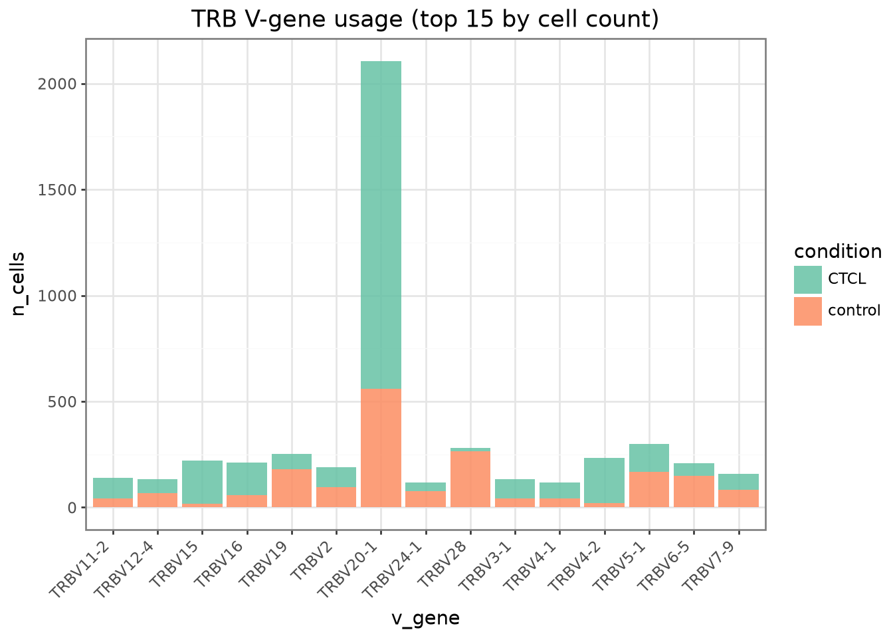
Repertoire-feature embedding
These TCR resources do not include matched expression coordinates. We therefore calculate a repertoire-feature PCA from one-hot-encoded V/J gene usage per clonotype. It should be interpreted as an embedding of receptor features, not as a transcriptomic UMAP.
from sklearn.decomposition import PCA
clonotype_summary = (
trb.groupby("clonotype_id")
.agg(v_gene=("v_gene", "first"), j_gene=("j_gene", "first"), condition=("condition", "first"), n_cells=("barcode", "nunique"))
.reset_index()
)
onehot = pd.get_dummies(clonotype_summary[["v_gene", "j_gene"]])
coords = PCA(n_components=2, random_state=0).fit_transform(onehot.to_numpy())
clonotype_summary["X_pca_1"], clonotype_summary["X_pca_2"] = coords[:, 0], coords[:, 1]
gg.plot_clonotype_embedding(clonotype_summary, clonotype_col="clonotype_id", dimred="X_pca") + theme_bw() + labs(title="Repertoire-feature embedding (PCA of V/J gene usage), colored by clonal expansion")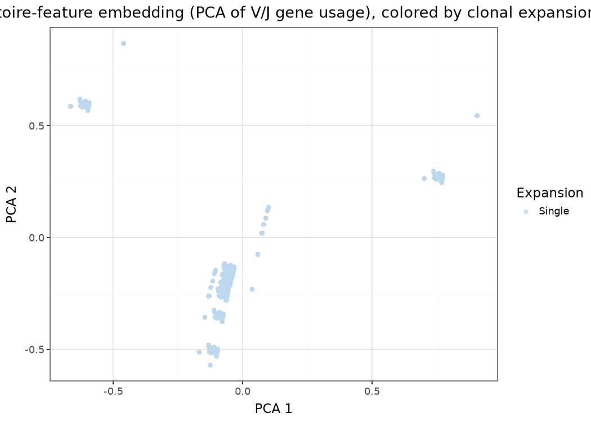
Composed multi-panel figure
p1 = gg.plot_abundance(baron_cd, group_by="donor", color_by="label") + theme_bw() + theme(legend_position="none", axis_text_x=element_text(rotation=45, hjust=1, size=7)) + labs(title="Baron composition")
p2 = gg.plot_volcano(results, label_top_n=5) + theme_bw() + labs(title="E-MTAB-1625 volcano")
p3 = gg.plot_clonotype_abundance(cell_level, clonotype_col="clonotype_id", sample_col="condition", top_n=8) + theme_bw() + theme(legend_position="none", axis_text_x=element_text(rotation=45, hjust=1)) + labs(title="TCR clonotype abundance")
(p1 | p2) / p3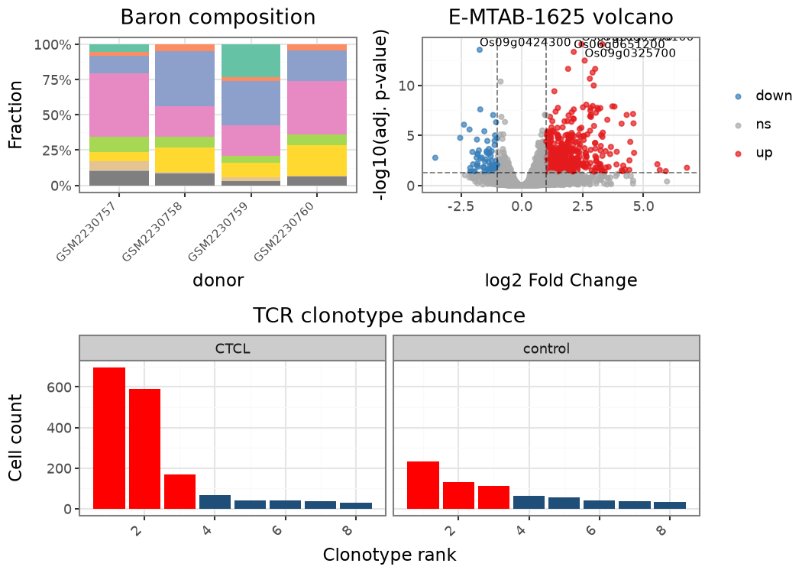
Next
- The plot gallery provides a function-oriented index to these and the other plotting examples.